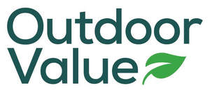

Trade Mark Journal No.2025/011 14 March 2025
UK00004147000 13 January 2025 (6,7,8,11,12,13,16,17,18,20,21,22,24,25,26,28,35)

- Class 6
- Common metals and their alloys, ores; metal containers for storage or transport; metal materials for building and construction; non-electric cables and wires of common metal; safes; small items of metal hardware; transportable buildings of metal; greenhouses being fixed metal structures; greenhouses of metal, transportable; metal chainlink fences; metal fence panels; metal fence posts; metal garden stakes; metal greenhouses; metal lock boxes; metallic fences; pegs of metal; tent pegs of metal; wire fences; all-weather sports surfacing materials for (metal-) outdoor use; animal traps (metal -) for wild animals; animals (metal cages for wild -); arbours of metal, gazebos of metal; arch frames (metal -) for use in construction; arches made of metallic materials; awnings of metal; armour plating, door handles and knobs of metal, bolts, padlocks, keys, pegs and hinges of metal, bells; barbed wire; bells for animals; bend pipes of metal; bicycle locks; bicycle sheds [structures] of metal; bicycle storage racks of metal; binding screws of metal for cables; bins of metal; bird baths [structures] of metal; blackout blinds [outdoor] of metal; blinds of metal for external use; boxes for storage purposes [metal]; boxes of common metal, chests and containers of metal; boxes of metal for horticultural purposes; building and construction materials and elements of metal; cabinet fittings of common metal; cables, wires and chains, of metal; cages of metal; canopies [structures] of metal; carports of metal; cat flaps of metal; chicken wire; clothes hooks of metal; compost bins and silos and waste composters of metal; containers, and transportation and packaging articles, of metal; cupboard fittings of metal; decorative boxes made of non-precious metal; decorative centerpieces of common metal; dispensers, of metal; door bells, non-electric; door bolts of metal; door chains of metal; door knobs of common metal; doors and door frames of metal (except vehicle doors), door stops of metal and door frames of metal; doors, gates, windows and window coverings of metal; edging strips of metal; fence links of metal; fence panels of metal; fences of metal; fences, gratings and grilles of metal; figurines for ornamental purposes made from common metal; fire safe boxes; fireplace grates of metal; fittings of metal for beds; flagpoles of metal; floors of metal; folding doors of metal; garden sheds of metal; gates and barriers of metal; grab bars of metal; hand operated metal garden hose reels; hen-houses made of metal; hooks of metal; horticultural frames of metal; house numbers of metal, non-luminous; insect screens of metal; ironmongery; keys; ladders and scaffolding, of metal; ladders and stepladders of metal; letter boxes of metal; letter boxes; letter-box covers of metal; lock installation kit consisting of metal lock, screws, hinges, and a screwdriver; locks and keys, of metal; manhole covers of metal; metal gazebos; metal greenhouse frames; metal lawn edging; metal palisades; metal patio doors; metal railings for fences; metal stepladders; metal storage sheds; metal tent pegs; metal weather vanes; metallic pergolas; metallic push button padlocks; monuments of metal for tombs; mosquito screens [metal]; non-electric locks of metal, chains of metal; nuts, bolts and fasteners, of metal; outdoor blinds of metal; packaging containers of metal; padlocks; path edgings made of metal materials; pergolas of metal; pet collar accessories, namely, fitted silencers for metal pet tags; pet collar accessories, namely, metal bells; picture hook pins; pre-fabricated houses of metal for farm animals; protective bars of metal; racking [structures] of metal for storage purposes; rainwater collectors of metal, in particular tanks and wells of metal; reels and winding spools of metal, non-mechanical, for flexible hoses; roofs and roof coverings of metal; safety fences of metal; scaffoldings of metal; screws, nails and nuts and bolts of metal; sculptures of non-precious metal; securing wire for plants; stakes of metal for plants or trees; statues of common metal; tiles of metal; tool boxes of metal; tool storage containers of metal [empty]; toolboxes of metal, empty; tree protectors of metal; trellis of metal; wall mounted metal tool racks; workbenches of metal; works of art, statues or figurines (statuettes) of common metal; parts and fittings for all the aforesaid goods.
- Class 7
- Machine tools, power-operated tools; motors and engines, except for land vehicles; machine coupling and transmission components, except for land vehicles; agricultural implements, other than hand-operated hand tools; incubators for eggs; automatic vending machines; garden rotavators; electric garden shredders; gardening machines (powered -); gardening tools (electric -); scarifying machines for garden use; line trimmers for garden use; chippers [power lawn and garden tools]; cultivators [power lawn and garden tools]; water pumps for use in garden ponds; sprayers [machines] for garden use in spraying weedkillers; sprayers [machines] for garden use in spraying insecticide; cleaning machines for ponds; electrical pumps for ponds; water pumps for aerating ponds; earth augers; log splitters [machines]; air pumps; machines for inflating balloons; sewing machines; powered tools; household vacuum cleaners; machines and machine tools for agriculture, DIY and gardening; machines and machine tools for construction and public works; machines and machine tools for working metal, wood or plastics; cultivators (machines); cultivators; lawnmowers (machines); motor-powered or electric tools and instruments for DIY and gardening; electric hand drills, electric hand screwdrivers; planers; spray guns for paint, electric glue guns, soldering apparatus; electric shears; saws (machines) and saw blades; mechanical winding spools and reels for flexible pipes; extractors; agricultural implements other than hand-operated; electricity generators; machines and apparatus for cleaning, in particular high-pressure cleaning apparatus and cleaning appliances utilising steam; filtering machines; electric knives; electric can openers; shredders; parts and fittings for all the aforesaid goods .
- Class 8
- Hand tools and implements, hand-operated; cutlery; side arms, except firearms; razors; garden forks; gardening trowels; gardeners' knives; gardening shears; garden tools; hand-operated; garden rollers [hand-operated]; fireplace tool sets; bellows (fireplace -) [hand tools]; hand tools; hand-operated; vehicle trolley jacks [hand-operated]; hammers; mallets and sledgehammers; hand tools and implements (hand-operated), in particular tools for agriculture, DIY and gardening; hoe-forks, hoes, claws (hand tools), forks, rakes (hand tools), spades, draining spades, shovels (hand tools), picks, scarifiers (hand tools), hoes (hand tools), sowers (hand tools), spreaders (hand tools), lawn clippers (hand instruments), tree pruners, non-electric scissors (hand tools) and shears, hedge trimmers (hand instruments), scythes and sickles, saws (hand tools) and saw blades (parts of hand tools), pliers, spanners (hand tools), hammers (hand tools), retractable knives, nail drawers (hand tools), mitre boxes, graving tools (hand tools), squares (hand tools), vices; insecticide vaporisers (hand tools); hand tools for artists, in particular spatulas, sculptors' chisels; tool belts; cutlery, non-electric; hand-operated kitchen tools and instruments for chopping, grinding, squeezing, cutting, grating, peeling or mixing; fireplace bellows (hand instruments); parts and fittings for all the aforesaid goods.
- Class 11
- Apparatus and installations for lighting, heating, cooling, steam generating, cooking, drying, ventilating, water supply and sanitary purposes; rechargeable torches; flashlights [torches]; head torches; electric torches; lanterns; electric lanterns; toilets; pocket warmers; grills; grill lighters; charcoal grills; gas grills; cool boxes; electric; garden lighting; garden sprinklers [automatic]; watering apparatus [automatic] for garden use; automatic watering installations for use in gardening; lighting for ponds; filters for ponds; surface aerators for ponds; outdoor lighting; outdoor lighting fittings; electrical lamps for outdoor lighting; solar lights; solar lamps; sockets for electric lights; barbecue grills; cooking grills; electric grills; desk lamps; ornaments for Christmas trees [lights]; heaters; electric heaters; household air cleaners; humidifiers for household use; dehumidifiers for household use; decorative water fountains; air-conditioning apparatus and installations; air conditioning fans; water purifying and/or softening apparatus, instruments and installations, fountains, water filtering apparatus; air-purifying apparatus and machines; air humidifiers and dehumidifiers; heat exchangers; hot water bottles; lamps, street lamps, chandeliers, ceiling lights, wall lights, lamp shades, night lights for children; bulbs; electric pocket torches; outdoor solar lighting; electric lights for Christmas trees; radiators, boilers, water heaters, heat pumps; wood burning stoves, solar collectors (heating), refrigerators, ovens, hotplates, extractor hoods for kitchens, washbasins, baths, showers, water closets, toilet lids, and in particular washlet lids, toilet seats and in particular for children, the elderly or the disabled, sinks, bidets, flushing apparatus; sauna bath installations, spa baths, taps; barbecue apparatus; parts and fittings for all the aforesaid goods.
- Class 12
- Vehicles; apparatus for locomotion by land, air or water; kayaks; kayak paddles; garden hose carts; sack trucks; caravan storage assemblies; levelling apparatus for caravans; water deflecting skirts [kayak equipment]; cartop canoe and kayak carrier kits; deck bags adapted for use on kayaks; kayak-like boats; fishing trolleys; tool trolleys; camping trailers; wheelbarrows; sack barrows; head supports for vehicle seats; child carriers for bicycles; safety seats for children (for vehicles); safety belts and safety harness for vehicle seats; parts and fittings for all the aforesaid goods.
- Class 13
- Firearms; ammunition and projectiles; explosives; fireworks; gun cleaning brushes; firearm bipods; holsters for guns; gun cases; hunting gun cartridges; parts and fittings for all the aforesaid goods.
- Class 16
- Paper and cardboard; printed matter; bookbinding material; photographs; stationery and office requisites, except furniture; adhesives for stationery or household purposes; drawing materials and materials for artists; paintbrushes; instructional and teaching materials; plastic sheets, films and bags for wrapping and packaging; printers' type, printing blocks; map cases; printed geological maps; calendars; graphic prints; manuals [handbooks]; books; gardening books; booklets; journals; newspapers; newsletters; news sheets; magazines; periodicals; brochures; pamphlets; leaflets; promotional material; labels; tags; stationery; posters; sales catalogues; instruction manuals; instructional and teaching material (except apparatus); gift bags; carrier bags; gift tokens; gift vouchers; paper and cardboard (untreated, semi-finished or for stationery or printing); printed matter, forms, newspapers, books, manuals, prospectuses, pamphlets, magazines, catalogues, posters and calendars; stickers (items of stationery); wall stickers for interior decoration; wall coverings (decorative adhesive); window stickers; artists' materials; drawing instruments; paint brushes; house painters' rollers; typewriters and office requisites (except furniture); printers' type; printing blocks; wrapping paper; bags (envelopes, pouches) of paper or plastics, for packaging; bubble packs (plastic-) (for wrapping or packaging); rubbish bags of paper or of plastics; boxes of cardboard or paper; cardboard articles; paper handkerchiefs; face towels of paper; table linen of paper; engravings or lithographic works of art; framed or unframed paintings or graphic prints; watercolour pictures; patterns for dressmaking; flower-pot covers of paper; parts and fittings for all the aforesaid goods.
- Class 17
- Unprocessed and semi-processed rubber, gutta-percha, gum, asbestos, mica and substitutes for all these materials; plastics and resins in extruded form for use in manufacture; packing, stopping and insulating materials; flexible pipes, tubes and hoses, not of metal; garden hoses; flexible hoses, not of metal; lawn hoses; rubber, gutta-percha, gum, asbestos, mica; plastics in extruded form for use in manufacture; flexible pipes, not of metal; rubber stoppers; junctions for pipes, not of metal; watering hoses; waterproof or insulating packing; gaskets; sealant compounds for joints; insulating paints, varnishes and coatings; packing, cushioning and stuffing materials of rubber or plastics; sheets of plastic for agricultural use; metal foil for insulation; insulating gloves, tapes, fabrics or varnishes; artificial or synthetic resins (semi-finished products); glass fibres or wool for insulation; parts and fittings for all the aforesaid goods.
- Class 18
- Leather and imitations of leather; animal skins and hides; luggage and carrying bags; umbrellas and parasols; walking sticks; whips, harness and saddlery; collars, leashes and clothing for animals; camping bags; backpacks; backpacks [rucksacks]; sports bags; luggage covers; hiking poles; bags; garden umbrellas; umbrellas; patio umbrellas; boot bags; hunting crops; hunting bags; game bags [hunting accessories]; dry bags; leather and imitation leather sport bags and general purpose trolley bags; holdalls; animal skins, hides; trunks and travelling bags; umbrellas, parasols and walking sticks; wallets; change purses; handbags, rucksacks, wheeled shopping bags; mountain bags, bags for campers, travel bags, beach bags, school bags; vanity cases (not fitted); collars and covers for animals; net shopping bags and shopping bags; bags (envelopes, pouches) of leather, for packaging; boxes of leather or leather board; parts and fittings for all the aforesaid goods.
- Class 20
- Furniture, mirrors, picture frames; containers, not of metal, for storage or transport; unworked or semi-worked bone, horn, whalebone or mother-of-pearl; shells; meerschaum; yellow amber; camping furniture; camping mattresses; foam camping mattresses; sleeping mats for camping [mattresses]; air mattresses for use when camping; inflatable mattresses for use when camping; tent poles; not of metal; tent pegs; not of metal; pegs [pins]; not of metal; picnic tables; picnic benches; picnic baskets [not fitted]; camp beds; garden furniture; plastic garden furniture; non-metal garden stakes; garden furniture manufactured from wood; garden furniture made of aluminium; garden furniture made of metal; tables for use in gardens; combination kneeler and seat for gardening; porch swings; umbrella stands; shelving; furniture made of rattan; work benches; benches [furniture]; wood planters; key cabinets; fireplace screens; wood door handles; door handles of porcelain; drawer handles (non-metallic -); furniture handles; not of metal; handles made of plastics for doors; household furniture; metal furniture and furniture for camping; picnic units [furniture]; protective covers for furniture [shaped]; protective covers for furniture [fitted]; furniture for caravans; wagons [trolleys] furniture; kitchen-type cabinets for outdoor use; hanging baskets [flower] of non-metallic materials; furniture; kitchen, bathroom and garden furniture, mirrors, picture frames; picture frame brackets; beds and in particular folding beds; bedding (not including linen); works of art or decorative items of wood, wax, plaster, cork, reed, cane, wicker, horn, bone, ivory, whalebone, shell, amber, mother-of-pearl, meerschaum and substitutes for all these materials, or of plastics; coat hangers, clothes hangers; clothes hooks, not of metal; chests of drawers; cushions; shelves; racks; packaging containers of plastic; wickerwork; wine cabinets (furniture); bottle racks; indoor blinds for windows (furniture); woven wood blinds (furniture); slatted indoor blinds; curtain rods and hooks; curtain rings, curtain rails, curtain rollers; bead curtains for decoration; furniture screens; doors, trimmings, shelves, casters and legs for furniture; cupboard organisers (dressing rooms); partitions of wood for furniture; mobiles (decoration); decorative wall plaques, not of textile [furniture]; towel closets [furniture]; coatstands; baskets (not of metal); wicker baskets; fireguards; tubs, not of metal, for water recovery; boxes, chests and containers of wood or plastic; letter boxes (not of metal or masonry); flower stands; flower-pot pedestals; workbenches, not of metal; rainwater collectors, not of metal, in particular tanks and wells, not of metal; reels, not of metal, non-mechanical, for flexible hoses; compost bins and silos and waste composters, not of metal; log baskets; kennels for household pets; pet cushions; stops, not of metal, for doors, wall cupboards and drawers; protectors, not of metal, for table corners; door wedges; toy chests; chairs, folding seats; armchairs; paper blinds; door stops, not of metal; door handles and knobs, not of metal; non-metal sash fasteners for windows; non-metal lock boxes; parts and fittings for all the aforesaid goods.
- Class 21
- Household or kitchen utensils and containers; cookware and tableware, except forks, knives and spoons; combs and sponges; brushes, except paintbrushes; brush-making materials; articles for cleaning purposes; unworked or semi-worked glass, except building glass; glassware, porcelain and earthenware; camping grills; grill supports; cooking pot sets; cool boxes; portable cool boxes, non-electric; cool bags; picnic crockery; picnic boxes; picnic baskets (fitted), including dishes; gardening gloves; garden hose sprayers; garden gnomes of glass; garden gnomes of porcelain; garden hose spray nozzles; sprayers attached to garden hoses; traps for rodents; traps for pests; devices for pest and vermin control; bird feeders; aquarium ornaments; boot jacks; boot brushes; fruit presses, non-electric, for household purposes; planters of plastic; planters of porcelain; planters of pottery; clothes airers [clothes horse]; hydration packs containing a fluid reservoir, delivery tube, and mouthpiece; portable cooking kits for outdoor use; flasks; raised garden planters; self-watering planters for flowers and plants; gun cleaning cloths; hand-operated cleaning instruments; household or kitchen utensils and containers, non-electric; brushes (except paint brushes); hand-operated cleaning instruments; brooms; steel wool; cloth (rags) for cleaning; unworked or semi-worked glass (except glass used in building); glass receptacles; dinnerware; porcelain; earthenware; bottles; works of art, statues or figurines (statuettes) of porcelain, terracotta or glass; toilet utensils and toilet cases; soap holders; soap boxes; towel holders; dustbins; pottery; vases; flower pots; plant containers; flower-pot covers, not of paper; perfume burners; watering devices, nozzles for sprinkler hose, sprinklers, watering cans, hose guides, buckets, gardening gloves and gloves for household purposes; insect, rat and mouse traps; indoor aquariums; and parts and fittings for all the aforesaid goods.
- Class 22
- Ropes and string; nets; tents and tarpaulins; awnings of textile or synthetic materials; sails; sacks for the transport and storage of materials in bulk; padding, cushioning, and stuffing materials, except of paper, cardboard, rubber, or plastics; raw fibrous textile materials and substitutes therefor; camping tents; tents [not for camping]; canvas tarpaulins; waterproof covers [tarpaulins]; awnings and tarpaulins; awnings for tents; tents [awnings] for caravans; hammocks; windbreaks [screening]; garden nets; plastic ties for garden use; nets for protective use in gardening; sailcloth structures, namely shade sails; tarpaulins, awnings, tents, and unfitted coverings; ropes for tents; nets for windbreak purposes; ropes (not of rubber or for rackets or musical instruments), string, fishing nets and nets for camouflage, tents, awnings, tarpaulins, sails (rigging), padding and stuffing materials (except of rubber and plastics); raw fibrous textile materials; bags and sacks (envelopes, pouches) of textile, for packaging; cables, not of metal; parts and fittings for all the aforesaid goods.
- Class 24
- Textiles and substitutes for textiles; household linen; curtains of textile or plastic; sleeping bags; sleeping bag liners; mosquito nets; loose covers for garden furniture; fabrics for manufacturing garden furniture; coverings for furniture; beach towels; moisture absorbent microfiber towels for camping use; bivouac sacks being covers for sleeping bags; bags for sleeping bags [specifically adapted]; fabrics for textile use; bed and table covers; household linen (except table linen of paper and paper towels), bed linen; bed canopies (textile); bed runners (textile); bed valances (textile); sleeping bags (sheeting) including baby sleep sacks; bath linen (except clothing); table linen, not of paper; cushion covers; chair covers; blinds and curtains of textile; net; shower curtains; textile wall hangings; door curtains; parts and fittings for all the aforesaid goods.
- Class 25
- Clothing, footwear, headwear; climbing boots; mountaineering boots; hiking boots; trekking boots; Wellington boots; army boots; gaiters; hunting pants; hunting vests; hunting shirts; hunting jackets; hunting boots; hunting boot bags; robes; bath robes; aprons; parts and fittings for all the aforesaid goods.
- Class 26
- Lace, braid and embroidery, and haberdashery ribbons and bows; buttons, hooks and eyes, pins and needles; artificial flowers; hair decorations; false hair; artificial plants; artificial topiaries; shuttles for making fishing nets; outdoor artificial foliage; parts and fittings for all the aforesaid goods.
- Class 28
- Games, toys and playthings; video game apparatus; gymnastic and sporting articles; decorations for Christmas trees; targets, including firearm targets, archery targets, and targets for sporting use; fishing lures, leaders, sinkers, gaffs, equipment, tackle, poles, weights, rods, reels, hooks, floats, and lines; artificial fishing bait; fishing rod rests; bags for fishing; fishing rod cases; floats for fishing; handheld fishing nets; bite alarms for use in angling; goal posts and nets, including basketball goals, soccer goals, hockey goals, and soccer ball goal nets; tennis balls, nets, rackets, uprights, table tennis balls, nets, paddles, and tables; baseball bats; archery apparatus and sets; sports games and equipment; nets for sports; sports training apparatus; balls for sports, including footballs, American footballs, and rugby balls; hunting and fishing equipment, including hunting stands and blinds, decoys for hunting or fishing, camouflage screens for hunting purposes, and scent-eliminating sprays for outdoor recreation; clay pigeon traps; trolley bags specially adapted for sports equipment; animal hunting decoys; scent dispensers for attracting or repelling animals; outdoor games, including play frames with swings, slides, swing seats, climbing ropes, gymnastic apparatus, and sports apparatus; swings, sandboxes, sand pits, sledges, trampolines, swimming pools (play articles), and kites; gymnastic and sporting articles (except clothing, footwear, and mats); musical mobiles (playthings); soft toys; play mats (playthings); decorations for Christmas trees (except illumination articles and confectionery); Christmas trees of synthetic material; and parts and fittings for all the aforesaid goods.
- Class 35
- Advertising, business management, organization and administration; office functions; marketing; online advertising; export agency services for the goods of others; freight management services, namely, shipment processing, preparing shipping documents and invoices, tracking documents, packages and freight over computer networks, intranets, and the internet for business purposes; import and export agency services; retail and online retail services relating to: greenhouses being fixed metal structures, greenhouses of metal, transportable, metal chainlink fences, metal fence panels, metal fence posts, metal garden stakes, metal greenhouses, metal lock boxes, metallic fences, pegs of metal, tent pegs of metal, wire fences, all-weather sports surfacing materials for (metal-) outdoor use, animal traps (metal -) for wild animals, animals (metal cages for wild -), arbours of metal, gazebos of metal, arch frames (metal -) for use in construction, arches made of metallic materials, awnings of metal, armour plating, door handles and knobs of metal, bolts, padlocks, keys, pegs and hinges of metal, bells, bells for animals, bend pipes of metal, bicycle locks, bicycle sheds [structures] of metal, bicycle storage racks of metal, binding screws of metal for cables, bins of metal, bird baths [structures] of metal, blackout blinds [outdoor] of metal, blinds of metal for external use, boxes for storage purposes [metal], boxes of common metal, chests and containers of metal, boxes of metal for horticultural purposes, bronze holiday ornaments, other than christmas tree ornaments, building and construction materials and elements of metal, cabinet fittings of common metal, cables, wires and chains, of metal, cages of metal, canopies [structures] of metal, carports of metal, cat flaps of metal, chicken wire, clothes hooks of metal, compost bins and silos and waste composters of metal, containers, and transportation and packaging articles, of metal, cupboard fittings of metal, decorative boxes made of non-precious metal, decorative centerpieces of common metal, dispensers, of metal, door bells, non-electric, door bolts of metal, door chains of metal, door knobs of common metal, doors and door frames of metal (except vehicle doors), door stops of metal and door frames of metal, doors, gates, windows and window coverings of metal, edging strips of metal, fence links of metal, fence panels of metal, fences of metal, fences, gratings and grilles of metal, figurines for ornamental purposes made from common metal, fire safe boxes, fireplace grates of metal, fittings of metal for beds, flagpoles of metal, floors of metal, folding doors of metal, garden sheds of metal, gates and barriers of metal, grab bars of metal, hand operated metal garden hose reels, hen-houses made of metal, hooks of metal, horticultural frames of metal, house numbers of metal, non-luminous, insect screens of metal, ironmongery, key cabinets, key fobs of common metal, keys, ladders and scaffolding, of metal, ladders and stepladders of metal, letter boxes of metal, letter boxes, letter-box covers of metal, lock installation kit consisting of metal lock, screws, hinges, and a screwdriver, locks and keys, of metal, manhole covers of metal, metal gazebos, metal greenhouse frames, metal lawn edging, metal palisades, metal patio doors, metal railings for fences, metal stepladders, metal storage sheds, metal tent pegs, metal weather vanes, metallic pergolas, metallic push button padlocks, monuments of metal for tombs, mosquito screens [metal], non-electric locks of metal, chains of metal, non-metal lock boxes, nuts, bolts and fasteners, of metal, outdoor blinds of metal, packaging containers of metal, padlocks, path edgings made of metal materials, pergolas of metal, pet collar accessories, namely, fitted silencers for metal pet tags, pet collar accessories, namely, metal bells, picture hook pins, pre-fabricated houses of metal for farm animals, protective bars of metal, racking [structures] of metal for storage purposes, rainwater collectors of metal, in particular tanks and wells of metal, reels and winding spools of metal, non-mechanical, for flexible hoses, roofs and roof coverings of metal, safety fences of metal, scaffoldings of metal, screws, nails and nuts and bolts of metal, sculptures of non-precious metal, securing wire for plants, stakes of metal for plants or trees, statues of common metal, tiles of metal, tool boxes of metal, tool storage containers of metal [empty], toolboxes of metal, empty, tree protectors of metal, trellis of metal, wall mounted metal tool racks, workbenches of metal, works of art, statues or figurines (statuettes) of common metal, garden rotavators, electric garden shredders, gardening machines (powered -), gardening tools (electric -), scarifying machines for garden use, line trimmers for garden use, chippers [power lawn and garden tools], cultivators [power lawn and garden tools], water pumps for use in garden ponds, sprayers [machines] for garden use in spraying weedkillers, sprayers [machines] for garden use in spraying insecticide, cleaning machines for ponds, electrical pumps for ponds, water pumps for aerating ponds, earth augers, log splitters [machines], air pumps, machines for inflating balloons, sewing machines, powered tools, household vacuum cleaners, machines and machine tools for agriculture, diy and gardening, machines and machine tools for construction and public works, machines and machine tools for working metal, wood or plastics, cultivators (machines), cultivators, lawnmowers (machines), motor-powered or electric tools and instruments for diy and gardening, electric hand drills, electric hand screwdrivers, planers, spray guns for paint, electric glue guns, soldering apparatus, electric shears, saws (machines) and saw blades, mechanical winding spools and reels for flexible pipes, extractors, agricultural implements other than hand-operated, electricity generators, machines and apparatus for cleaning, in particular high-pressure cleaning apparatus and cleaning appliances utilising steam, filtering machines, electric knives, electric can opener, shredders, garden forks, gardening trowels, gardeners' knives, gardening shears, garden tools, hand-operated, garden rollers [hand-operated], fireplace tool sets, bellows (fireplace -) [hand tools], hand tools, hand-operated, vehicle trolley jacks [hand-operated], hammers, mallets and sledgehammers, hand tools and implements (hand-operated), in particular tools for agriculture, diy and gardening, hoe-forks, hoes, claws (hand tools), forks, rakes (hand tools), spades, draining spades, shovels (hand tools), picks, scarifiers (hand tools), hoes (hand tools), sowers (hand tools), spreaders (hand tools), lawn clippers (hand instruments), tree pruners, non-electric scissors (hand tools) and shears, hedge trimmers (hand instruments), scythes and sickles, saws (hand tools) and saw blades (parts of hand tools), pliers, spanners (hand tools), hammers (hand tools), retractable knives, nail drawers (hand tools), mitre boxes, graving tools (hand tools), squares (hand tools), vices, insecticide vaporisers (hand tools), hand tools for artists, in particular spatulas, sculptors' chisels, tool belts, cutlery, non-electric, hand-operated kitchen tools and instruments for chopping, grinding, squeezing, cutting, grating, peeling or mixing, fireplace bellows (hand instruments), rechargeable torches, flashlights [torches], head torches, electric torches, lanterns, electric lanterns, toilets, pocket warmers, grills, grill lighters, charcoal grills, gas grills, cool boxes, electric, garden lighting, garden sprinklers [automatic], watering apparatus [automatic] for garden use, automatic watering installations for use in gardening, lighting for ponds, filters for ponds, surface aerators for ponds, outdoor lighting, outdoor lighting fittings, electrical lamps for outdoor lighting, solar lights, solar lamps, sockets for electric lights, barbecue grills, cooking grills, electric grills, desk lamps, ornaments for Christmas trees [lights], heaters, electric heaters, household air cleaners, humidifiers for household use, dehumidifiers for household use, decorative water fountains, air-conditioning apparatus and installations, air conditioning fans, water purifying and/or softening apparatus, instruments and installations, fountains, water filtering apparatus, air-purifying apparatus and machines, air humidifiers and dehumidifiers, heat exchangers, hot water bottles, lamps, street lamps, chandeliers, ceiling lights, wall lights, lamp shades, night lights for children, bulbs, electric pocket torches, outdoor solar lighting, electric lights for Christmas trees, radiators, boilers, water heaters, heat pumps, wood burning stoves, solar collectors (heating), refrigerators, ovens, hotplates, extractor hoods for kitchens, washbasins, baths, showers, water closets, toilet lids, and in particular washlet lids, toilet seats and in particular for children, the elderly or the disabled, sinks, bidets, flushing apparatus, sauna bath installations, spa baths, taps, barbecue apparatus, kayaks, kayak paddles, garden hose carts, sack trucks, caravan storage assemblies, levelling apparatus for caravans, water deflecting skirts [kayak equipment], cartop canoe and kayak carrier kits, deck bags adapted for use on kayaks, kayak-like boats, fishing trolleys, tool trolleys, camping trailers, wheelbarrows, sack barrows, head supports for vehicle seats, child carriers for bicycles, safetyseats for children (for vehicles), safety belts and safety harness for vehicle seats, gun cleaning brushes, firearm bipods, holsters for guns, gun cases, hunting gun cartridges, map cases, printed geological maps, calendars, graphic prints, manuals [handbooks], books, gardening books, booklets, journals, newspapers, newsletters, news sheets, magazines, periodicals, brochures, pamphlets, leaflets, promotional material, labels, tags, stationery, posters, sales catalogues, instruction manuals, instructional and teaching material (except apparatus), gift bags, carrier bags, gift tokens, gift vouchers, paper and cardboard (untreated, semi-finished or for stationery or printing), stickers (items of stationery), wall stickers for interior decoration, wall coverings (decorative adhesive), window stickers, artists' materials, drawing instruments, paint brushes, house painters' rollers, typewriters and office requisites (except furniture), printers' type, printing blocks, wrapping paper, bags (envelopes, pouches) of paper or plastics, for packaging, bubble packs (plastic-) (for wrapping or packaging), rubbish bags of paper or of plastics, boxes of cardboard or paper, cardboard articles, paper handkerchiefs, face towels of paper, table linen of paper, engravings or lithographic works of art, framed or unframed paintings or graphic prints, watercolour pictures, patterns for dressmaking, flower-pot covers of paper, garden hoses, flexible hoses, not of metal, lawn hoses, rubber, gutta-percha, gum, asbestos, mica, plastics in extruded form for use in manufacture, flexible pipes, not of metal, rubber stoppers, junctions for pipes, not of metal, watering hoses, waterproof or insulating packing, gaskets, sealant compounds for joints, insulating paints, varnishes and coatings, packing, cushioning and stuffing materials of rubber or plastics, sheets of plastic for agricultural use, metal foil for insulation, insulating gloves, tapes, fabrics or varnishes, artificial or synthetic resins (semi-finished products), glass fibres or wool for insulation, camping bags, backpacks, backpacks [rucksacks], sports bags, luggage covers, hiking poles, bags, garden umbrellas, umbrellas, patio umbrellas, boot bags, hunting crops, hunting bags, game bags [hunting accessories], dry bags, leather and imitation leather sport bags and general purpose trolley bags, holdalls, animal skins, hides, trunks and travelling bags, umbrellas, parasols and walking sticks, wallets, change purses, handbags, rucksacks, wheeled shopping bags, mountain bags, bags for campers, travel bags, beach bags, school bags, vanity cases (not fitted), collars and covers for animals, net shopping bags and shopping bags, bags (envelopes, pouches) of leather, for packaging, boxes of leather or leather board, camping furniture, camping mattresses, foam camping mattresses, sleeping mats for camping [mattresses], air mattresses for use when camping, inflatable mattresses for use when camping, tent poles, not of metal, tent pegs, not of metal, pegs [pins], not of metal, picnic tables, picnic benches, picnic baskets [not fitted], camp beds, garden furniture, plastic garden furniture, non-metal garden stakes, garden furniture manufactured from wood, garden furniture made of aluminium, garden furniture made of metal, tables for use in gardens, combination kneeler and seat for gardening, porch swings, umbrella stands, shelving, furniture made of rattan, work benches, benches [furniture], wood planters, key cabinets, fireplace screens, wood door handles, door handles of porcelain, drawer handles (non-metallic -), furniture handles, not of metal, handles made of plastics for doors, household furniture, metal furniture and furniture for camping, picnic units [furniture], protective covers for furniture [shaped], protective covers for furniture [fitted], furniture for caravans, wagons [trolleys] furniture, kitchen-type cabinets for outdoor use, hanging baskets [flower] of non-metallic materials, furniture, kitchen, bathroom and garden furniture, mirrors, picture frames, picture frame brackets, beds and in particular folding beds, bedding (not including linen), works of art or decorative items of wood, wax, plaster, cork, reed, cane, wicker, horn, bone, ivory, whalebone, shell, amber, mother-of-pearl, meerschaum and substitutes for all these materials, or of plastics, coat hangers, clothes hangers, clothes hooks, not of metal, chests of drawers, cushions, shelves, racks, packaging containers of plastic, wickerwork, wine cabinets (furniture), bottle racks, indoor blinds for windows (furniture), woven wood blinds (furniture), slatted indoor blinds, curtain rods and hooks, curtain rings, curtain rails, curtain rollers, bead curtains for decoration, furniture screens, doors, trimmings, shelves, casters and legs for furniture, cupboard organisers (dressing rooms), partitions of wood for furniture, mobiles (decoration), decorative wall plaques, not of textile [furniture], towel closets [furniture], coatstands, baskets (not of metal), wicker baskets, fireguards, tubs, not of metal, for water recovery, boxes, chests and containers of wood or plastic, letter boxes (not of metal or masonry), flower stands, flower-pot pedestals, staircases of wood or plastics, workbenches, not of metal, rainwater collectors, not of metal, in particular tanks and wells, not of metal, reels, not of metal, non-mechanical, for flexible hoses, compost bins and silos and waste composters, not of metal, log baskets, kennels for household pets, pet cushions, stops, not of metal, for doors, wall cupboards and drawers, protectors, not of metal, for table corners, door wedges, toy chests, chairs, folding seats, armchairs, paper blinds, door stops, not of metal, door handles and knobs, not of metal, non-metal sash fasteners for windows, camping grills, grill supports, cooking pot sets, cool boxes, portable cool boxes, non-electric, cool bags, picnic crockery, picnic boxes, picnic baskets (fitted -), including dishes, gardening gloves, garden hose sprayers, garden gnomes of glass, garden gnomes of porcelain, garden hose spray nozzles, sprayers attached to garden hoses, traps for rodents, traps for pests, devices for pest and vermin control, bird feeders, aquarium ornaments, boot jacks, boot brushes, fruit presses, non-electric, for household purposes, planters of plastic, planters of porcelain, planters of pottery, clothes airers [clothes horse], hydration packs containing a fluid reservoir, delivery tube, and mouthpiece, portable cooking kits for outdoor use, flasks, raised garden planters, self-watering planters for flowers and plants, gun cleaning cloths, hand operated cleaning instruments, household or kitchen utensils and containers, non-electric, brushes (except paint brushes), hand operated cleaning instruments, brooms, steelwool, cloth (rags) for cleaning, unworked or semi-worked glass (except glass used in building), glass receptacles, dinnerware, porcelain, earthenware, bottles, works of art, statues or figurines (statuettes) of porcelain, terracotta or glass, toilet utensils and toilet cases, soap holders, soap boxes, towel holders, dustbins, pottery, vases, flower pots, plant containers, flower-pot covers, not of paper, perfume burners, watering devices, nozzles for sprinkler hose, sprinklers, watering cans, hose guides, buckets, gardening gloves and gloves for household purposes, insect, rat and mouse traps, indoor aquariums, camping tents, tents [not for camping], canvas tarpaulins, waterproof covers [tarpaulins], awnings and tarpaulins, awnings for tents, tents [awnings] for caravans, hammocks, windbreaks [screening], garden nets, plastic ties for garden use, nets for protective use in gardening, sailcloth structures, namely shade sails, tarpaulins, awnings, tents, and unfitted coverings, ropes for tents, nets for windbreak purposes, ropes (not of rubber or for rackets or musical instruments), string, fishing nets and nets for camouflage, tents, awnings, tarpaulins, sails (rigging), padding and stuffing materials (except of rubber and plastics), raw fibrous textile materials, bags and sacks (envelopes, pouches) of textile, for packaging, cables, not of metal, sleeping bags, sleeping bag liners, mosquito nets, loose covers for garden furniture, fabrics for manufacturing garden furniture, coverings for furniture, beach towels, moisture absorbent microfiber towels for camping use, bivouac sacks being covers for sleeping bags, bags for sleeping bags [specifically adapted], fabrics for textile use, bed and table covers, household linen (except table linen of paper and paper towels), bed linen, bed canopies (textile), bed runners (textile), bed valances (textile), sleeping bags (sheeting) including baby sleep sacks, bath linen (except clothing), able linen, not of paper, cushion covers, chair covers, blinds and curtains of textile, net, shower curtains, textile wall hangings, door curtains, climbing boots, mountaineering boots, hiking boots, trekking boots, wellington boots, army boots, gaiters, hunting pants, hunting vests, hunting shirts, hunting jackets, hunting boots, hunting boot bags, robes, bath robes, aprons, artificial plants. artificial topiaries, shuttles for making fishing nets, outdoor artificial foliage targets, firearm targets, archery targets, targets for sporting use, fishing lures, fishing leaders, fishing sinkers, fishing gaffs, fishing equipment, fishing tackle, fishing poles, fishing weights, fishing rods, fishing reels, fishing hooks, fishing floats, fishing lines, bait (artificial fishing -), fishing rod rests, bags for fishing, fishing rod cases, floats for fishing, handheld fishing nets, bite alarms for use in angling, goal posts, goal nets, basketball goals, soccer goals, hockey goals, soccer ball goal nets, tennis balls, tennis nets, tennis rackets, tennis uprights, table-tennis balls, table tennis nets, table tennis paddles, table tennis tables, baseball bats, archery apparatus, archery sets, sports games, sports equipment, nets for sports, sports training apparatus, balls for sports, footballs, football gloves, American footballs, rugby balls, hunting and fishing equipment, hunting stands [sports articles], hunting blinds [sports articles], decoys for hunting or fishing, camouflage screens for hunting purposes, clay pigeon traps, trolley bags specially adapted for sports equipment, animal hunting decoys, hunting stands, hunting blinds, scent eliminating sprays for use during hunting and outdoor recreation, hunting equipment, namely, scent dispenser for attracting or repelling animals, outdoor games and in particular play frames with swings, slides, swing seats, climbing ropes, gymnastic apparatus and sports apparatus, swings, sand boxes and pits, sledges, trampolines, swimming pools (play articles), kites, tables for table tennis, gymnastic and sporting articles (except clothing, footwear and mats), musical mobiles (playthings), soft toys, play mats (playthings), decoration for Christmas trees (except illumination articles and confectionery), Christmas trees of synthetic material; information, advisory and consultancy services relating to the aforesaid services.
Doidge Ltd
Representative: Stobbs